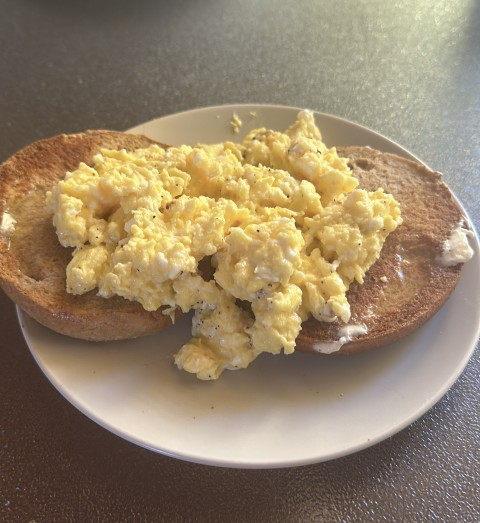

Perfect Scrambled Eggs
Return Home!

Description
A breakfast staple that is deceptively easy to get wrong. Learn
how to make the perfect scrambled eggs following this quick tutorial.
Get light and delicious scrambled eggs every single time.
Ingredients
- 4 Eggs
- 2 Tablespoons Butter
- Salt and Pepper To Taste
- Chilli Flakes Optional
Steps
-
Heat up frying pan to high, and add butter to melt. Crack eggs
into a bowl (Note: No seasoning should be added) and whisk
together using fork, introducing lots of air.
-
Add eggs to frying pan and constantly stir using a wooden spoon.
-
Once the eggs are firming up, add your salt and pepper as well as the
optional chilli flakes.
-
Cook until just firm, turning off the heat if need be. We want to
avoid overcooking the eggs which is very easy to do.
-
Serve on top of a toasted and buttered bagel!
Tips
-
Ever end up with watery scrambled eggs? You have likely been
adding your salt and pepper too early, this causes the eggs to
separate!
-
These eggs should be cooked at a high heat and quickly. Use a wooden
spoon to prevent damage to the coating of your non-stick frying pan.